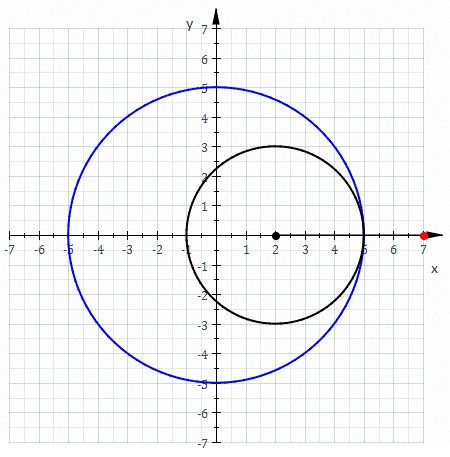

History:
A hypotrochoid is a roulette traced by a point attached to the circle of radius r rolling around the inside of the fixed circle of radius R, and the point is d distance away from the center of the inside circle.
Equation:
Domain:
The domain for this parametric curve ranges from 0-31.42.
